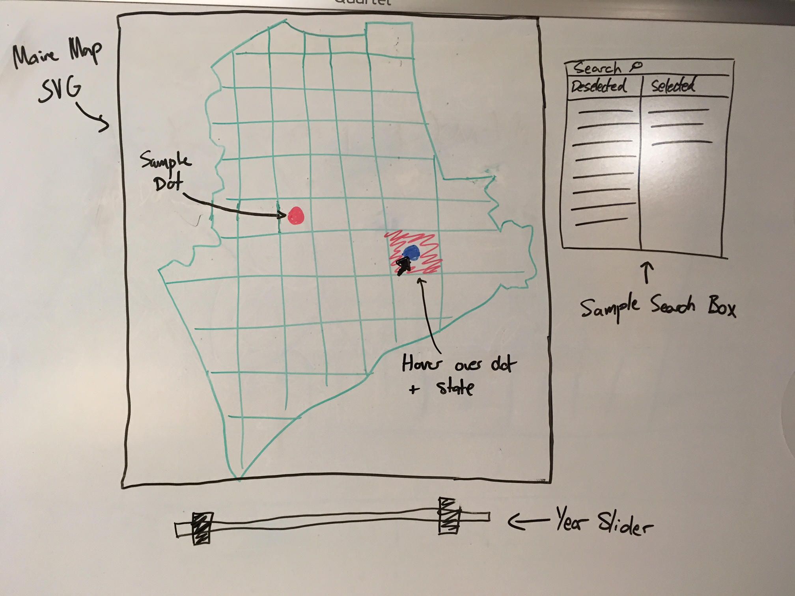
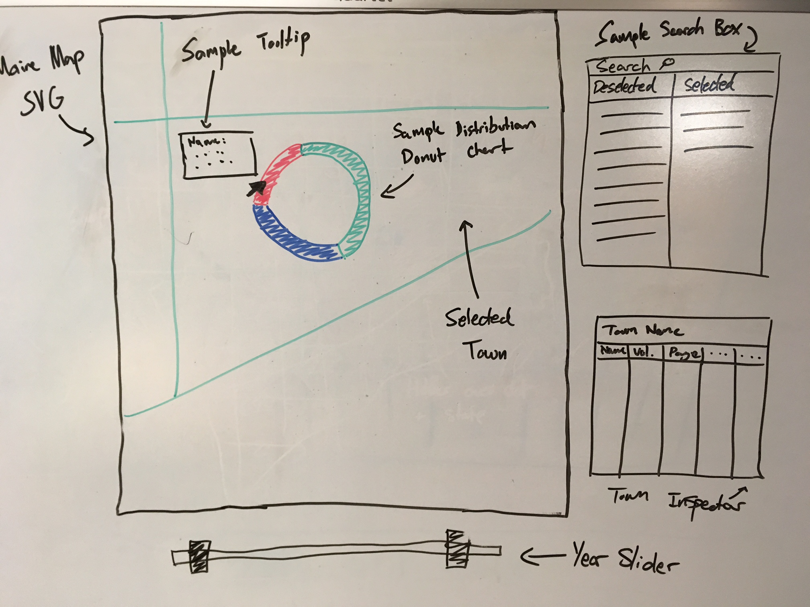

CSCI 3665: Interactive Data Visualization
FP12: Define Your Goals, take 2
Sophia Ardell, Marcus Christiansen, Tucker Gordon
November 29, 2016
Kate Furbish Collection
Approximately the visualization we hope to create by the end of the semester


General Description and Interactions
For our project, we are doing one "super-visualization" with many features. The main interface includes a map of Maine split by towns, a slider for selecting date ranges to examine, a searchable dialog box for both scientific and common names, and a "town inspector" box. The goal of this visulization is to be able to explore when and where Furbish found specific flora. By walking through each of the possible interactions, the functionality of each of these should become clear:
-
The year slider allows a user to select a range of years that they want to explore. Only samples that occured within that range will appear in the visualization.
-
The search box allows for searching by AH Scientific name, and by common name. The user can search for a flora by name, and then check any results that they want to visualize. Whenever a flora is checked, a dot will appear at all of the towns in which that flora was sampled (within the specified year range). If there is already a dot there (i.e. there has already been a flora checked with a sample there), the dot will increase in size. There is also be a way to select or deselect all flora.
-
The towns have multiple interactions:
- Fill: the towns will be a choropleth, where the darker their fill, the greater the number of samples.
- Mouse-over: The fill of the town will change to encourage user interaction. A tool-tip will also appear, showing town name (to help facillitate town-specific queries) and number of samples.
- Click: This will make the map SVG zoom in (if it isn't already), and trigger two processes that will be elaborated upon below, the sample distribution doughnut chart and the town inspector. Additionally, the click changes the fill of the town to help the user place it on the map, and to make the relationship between the information the town inspector shows and their click even more clear.
-
The dots have similar interactions as the towns:
- Size: the dots will only occur if there are samples present for the current flora selction within the town. The radius will increase (to an extent) proportional to number of samples in a town.
- Mouse-over: The fill of the town will change to encourage user interaction, and help show that the outcome from clicking the dot vs. the town is the same. A tool-tip will also appear, showing town name (to help facillitate town-specific queries) and number of samples.
- Click: This will make the map SVG zoom in (if it isn't already), and trigger two processes that will be elaborated upon below, the sample distribution doughnut chart and the town inspector. Additionally, the click changes the fill of the town to help the user place it on the map, and to make the relationship between the information the town inspector shows and their click even more clear. Upon zooming in, the dot disappears. It will return when the user zooms back out.
-
The sample distribution doughnut chart only shows when the user is zoomed in and has selected a specific town. The chart will show what proportion of the total samples in the town were of each selected species. If the user does a mouse-over on specific segements, a tool-tip will appear with some basic information about the species (common name, scientific name) and the number of samples in the town.
-
The town inspector will only show information for a specific town that is selected. It will allow the user to see all species of the current flora selection that are present in the town, in addition to the number of samples, years the samples were taken, and where to find its illustrations in the Furbish Collection
Goals by date
Week 1 (Nov. 13-19)
- Brainstorm questions and visualizations
- Write write-ups
- Clean data (get rid of typos)
- Read in and parse data
- Communicate plans/ideas for visualizations with Kat
Week 2 (Nov. 20-26)
- Finish parsing data
- Sophie and Marcus create map of Maine with dots on towns that have samples of currently selected flora
- i.e. Sophie makes a choropleth for a proof of concept that we have a map that dynamically represents user flora selection and where the samples of selected flora were taken. Marcus makes a map where there are dots at the geographic center of each town.
- Tucker researches search mechansims and implements one
Week 3 (Nov. 27 - Dec. 3)
- Whoever isn't debugging gets the zoom functionality to work on the map so that the user can zoom in on a particular town to gain more information regarding that respective town.
- Make dots increase in size to reflect aggreate data (so integrating Sophie's and Marcus' components, then embelleshing)
- Tucker and Sophie implement tooltips and visual indicators for when user hovers over a town or dot. This will allow the user to click on exactly what they want to click on.
- Tucker will design final layout for when all parts are integrated. If possible, the group will then begin to integrate search box with map visualization
- Start week 4 tasks if possible
Week 4 (Dec. 4-10)
- The group will finish integrating the search dialog and map tool.
- Build town inspection box and integrate with map and search box
- Give dots and towns functions that when clicked, change what infomation is displayed in the town inspection box, and zoom in if the user has not done so already.
- Marcus adds in slider (should be just copy and pasting)
- Prepare and give presentation
Week 5 (Dec. 11-18)
- Implement feedback from classmates
- Finish inspection box
- Debug and clean code
- Make everything look better!
- Flex goal (so only if everything goes really well): Create a timelapse function, where the user can look at the map for their current sample and watch it automatically flip through samples by year.